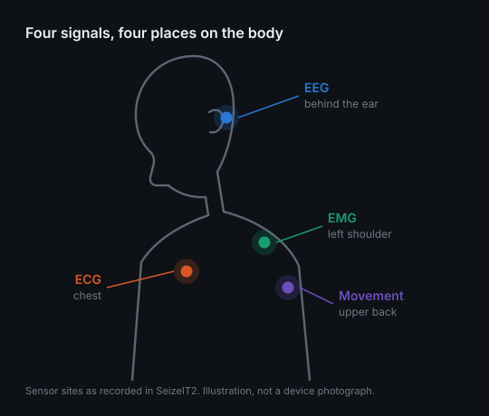
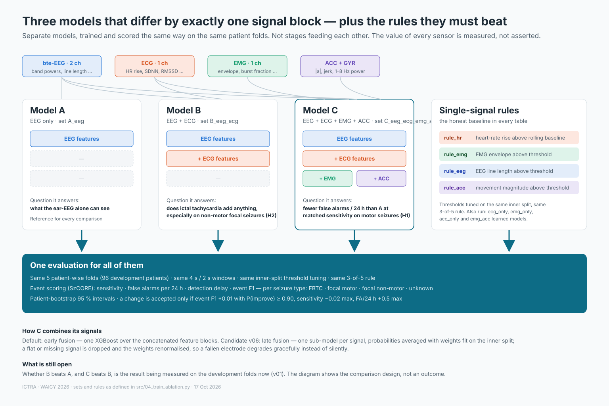

AI & method
The monitoring problem, physiological signals and model design.
The question
The problem itself — who is affected, what goes unwitnessed, what the care gaps are — is on the Problem page. This page is about how AI answers it.
Can a student-buildable wearable that fuses EEG, ECG and EMG with a trained multimodal model detect seizures with clinically useful sensitivity and fewer than one false alarm per day, on patients it has never seen?
We asked whether ICTRA should forecast seizures minutes ahead instead of detecting them. We read the evidence and decided no. The best wearable forecasting study to date (11 patients, about 337 days of smartwatch heart rate and steps each, seizures confirmed by implanted EEG) reaches AUC 0.74–0.78 only after 2–3 months of training per patient, is better than chance in 5–10 of 11 people, and keeps the wearer in a "warning" state for 6–8 hours a day. A review of 72 heart-rate-variability studies found pre-ictal changes mostly within 5 minutes of onset, all patient-specific and retrospective. Our training data cannot support a forecasting claim either: hospital stays of 2–5 days, few seizures per patient, and de-identified clocks that remove the circadian cycles forecasting relies on.
What our own data do show is that the heart changes a few seconds before the behind-the-ear EEG in about half of focal seizures. That is early detection, and it is where fusion can shorten the alarm delay. We also ran one exploratory check for drift in the two minutes before onset against 5,350 patient-matched control points (Exp P): none of the four signals moves before the seizure starts, in any seizure type (details on the Evidence page). ICTRA detects and alerts; it does not forecast.
EEG, ECG and EMG during a seizure
Within seconds of onset, the EEG shows rhythmic discharges, the heart rate jumps rather than ramps, and muscles fire in sustained high-frequency bursts. No single signal is reliable on its own; together they are hard to fake.

Our first experiment is not a detector. For every annotated seizure in the development set we align brain, heart and muscle to the onset and measure which signal moves first and by how many seconds: lag_eeg_to_hr, lag_eeg_to_emg, lag_emg_to_acc, by seizure type. The same question a landslide study asks of rain, soil water and ground motion. Heart and muscle are only useful at the moments they actually respond, so this timeline decides which signal to trust for which seizure. The measured version of the schematic above lands in Results.
Each added signal removes false alarms
Wearable detection of tonic-clonic seizures; sensitivity shown beside each bar
ECG-only detectors on SeizeIT2
Sensitivity at the sensitivity-optimised operating point, strict criterion; false alarms per hour in brackets
Model architecture and decision rule
A heart-rate threshold alarms on a staircase. An EMG threshold alarms on a shopping bag. An EEG amplitude threshold alarms on every blink. What identifies a seizure is the joint, time-evolving pattern across brain, heart and muscle, and it differs by person and seizure type. Learning that pattern from hundreds of annotated seizures is what a model can do and a hand-written rule cannot.
Three independent model variants
A: EEG. B: EEG + ECG. C: EEG + ECG + EMG + motion.
These are separate comparison models, not stages feeding predictions into one another. All use the same patient splits and evaluation protocol.
Open the full-size model comparison diagram ↗
Perception
Electrodes turn microvolt activity into samples; filters and spectrograms turn samples into features the model can see. We keep 1–25 Hz for EEG because ictal rhythms live there, and we filter out mains hum rather than learn it.
Representation & Reasoning
A 4 s window becomes a short vector of physical quantities: band powers and line length for the brain, heart rate and its rise over the last five minutes for the heart, burst energy for the muscle. The model reasons over those, and we can read back which ones it used.
Learning
Supervised learning from clinician-annotated seizures in SeizeIT2 only, split by patient. The locked test patients and five external datasets are opened once, after a hashed pre-registration. Within-patient splits inflate accuracy; we refuse them.
Natural Interaction
The system talks to humans at the right moment: an alert a caregiver can act on, a dashboard a neurologist can audit, no screen the patient must watch.
Societal Impact
A medical-grade capability at consumer cost, data kept local, and an ethics section that names who the model was not trained on.
k of n: three of the last five windows must agree
Fused probability per 4-second window (2-second hop); example threshold τ = 0.70. One spike (window 3) is ignored; sustained evidence (windows 7–9) fires the alert.
Model specifications and comparison methods
| Component | Architecture | Output | Why |
|---|---|---|---|
| Model A · EEG | Gradient-boosted trees (XGBoost on GPU; LightGBM, logistic regression and random forest as comparisons) on band powers 1–4 / 4–8 / 8–13 / 13–25 Hz, line length, variance, zero-crossings, spectral edge and kurtosis per channel, plus each feature's change against its own rolling 5-minute median | p(seizure) per 4 s window | Trains in minutes, runs on a laptop; importances show which rhythm fired |
| Model B · + ECG | Adds heart rate, its maximum, rise over the rolling 5-minute baseline (bpm and %), SDNN, RMSSD, slope, and a beat-quality flag | p(seizure) per window | Ictal tachycardia is a jump, not a level: the baseline comparison is the feature |
| Model C · + EMG + motion | Adds EMG envelope (log RMS), zero-crossings, burst fraction, change vs baseline; accelerometer magnitude, jerk and 1–8 Hz power | p(seizure) per window | Separates a tonic phase from lifting a bag by duration, rhythm and spectrum |
| Rules | Four single-signal thresholds (heart-rate rise, EMG level, EEG line length, movement), each tuned exactly like the models | alert on/off | The honest baseline every model has to beat |
| Decision | k-of-n (3 of 5 windows) above τ; τ tuned on an inner split of the training patients for maximum event F1, then frozen; alarms closer than 90 s merge | alert on/off | Two hyper-parameters, fully explainable; the same rule for every model |
| Planned comparison | A small 1-D CNN on the raw behind-the-ear EEG, and a 2-D CNN on spectrograms, run as later versions against the same rule | — | Accepted only if they beat the tree model on the development folds under the pre-set rule |